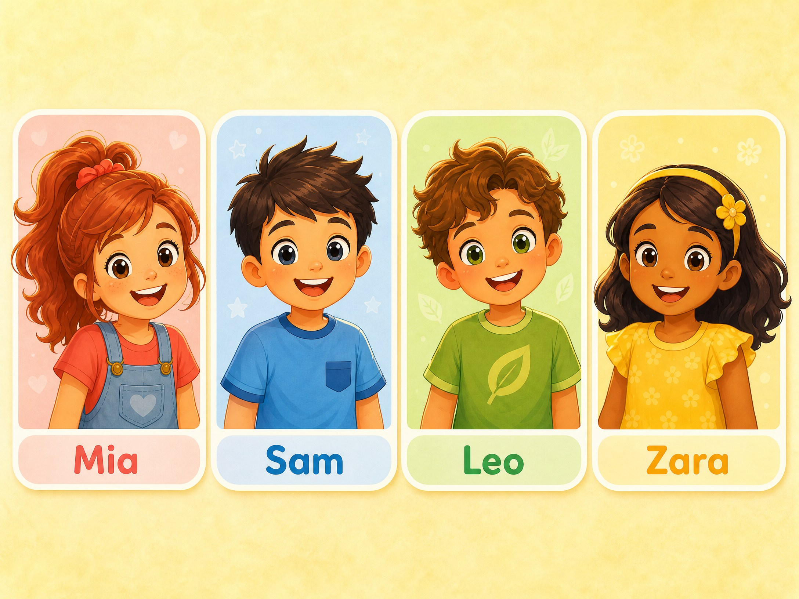
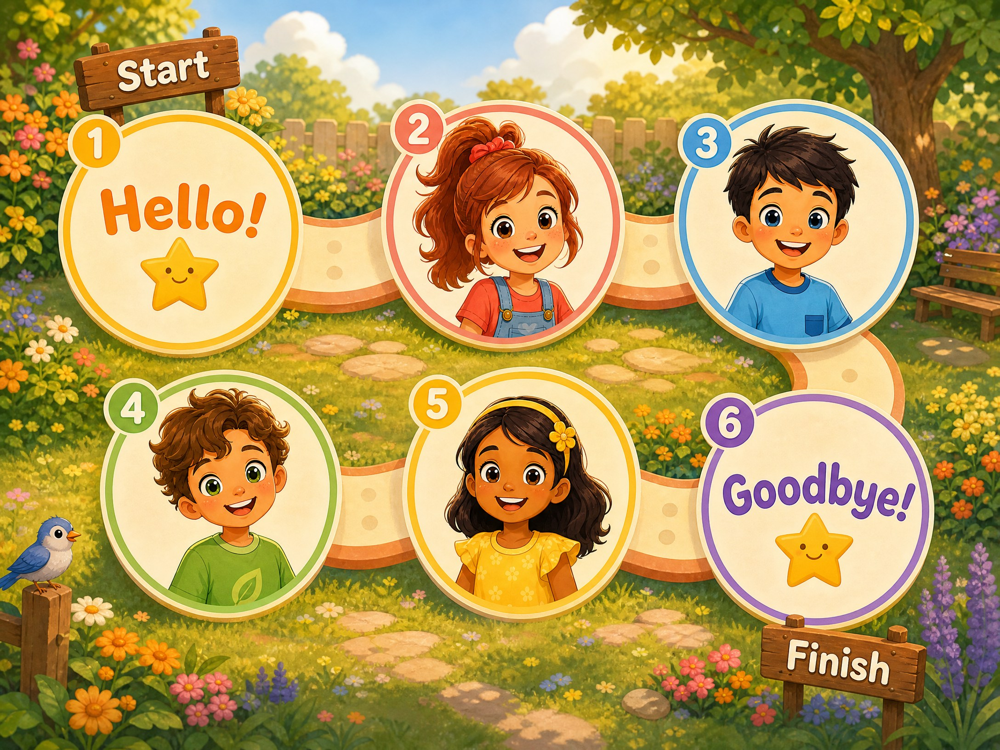

From learner prompt to finished page
Evidence from the final Student Book package connects ten printed pages with the original activity artwork, audible models, tracing areas, song and review game.
A4 print layout · audio controls are for screen use.
01 · Page-to-task sequence
Every page introduces a task, shows the relevant finished artwork and links recorded support at the point of use.
| Book page | Learner task | Evidence in the page | Audio |
|---|---|---|---|
| 4 · Hello, English! | Listen, look, point to Mrs Bell, Mr Bell, Mia and Sam; say “Hello!” | Family scene with the named characters. | Track 01 |
| 5 · Our Friends | Listen, repeat, point to each named friend. | Four separately labelled portraits. | Track 02 |
| 6 · Listen and Move | Listen and perform four actions; say the movement chant. | Four action panels with verb labels. | Tracks 03–04 |
| 7 · Trace and Say | Trace two greeting paths; trace and colour. | Dotted paths and open-book practice space. | — |
| 8 · My Name | Listen to two models; introduce yourself; draw your face. | Speech models and an empty learner badge. | Track 05 |
| 9 · Sound Time | Listen to /s/; trace three s forms; find s in a mixed row. | Letter model, dotted tracing and visual choice set. | Track 06 |
| 10 · Story | Listen, act and greet a friend. | Four story panels with dialogue. | Track 07 |
| 11 · Song | Listen, sing, wave, clap and point to yourself. | Four illustrated song-action panels. | Track 08 |
| 12 · My English Badge | Trace “Hello!”, draw your face and say your name. | Dotted word model and a large personalisation space. | — |
| 13 · Review Game | Follow the Hello Path, say each stop and listen to the review. | Numbered route from Start to Finish. | Track 09 |
02 · Final artwork in learning context
These page-sized illustrations contain the actual matching, tracing, speech, song and game visuals used in the learner book.




03 · Original track players
The supplied WAV masters are available from the matching exercise pages and here in the track index. Track 04 has voice and music variants.
Track 01 · Family IntroductionPage 4
Track 02 · Our FriendsPage 5
Track 03 · Listen and MovePage 6
Track 04 · Movement Chant · voicePage 6 · vocal version
Track 04 · Movement Chant · musicPage 6 · music version
Track 05 · My NamePage 8
Track 06 · Sound SPage 9
Track 07 · Story: Hello ZaraPage 10
Track 08 · Hello, Hello! SongPage 11
Track 09 · Review PromptsPage 13